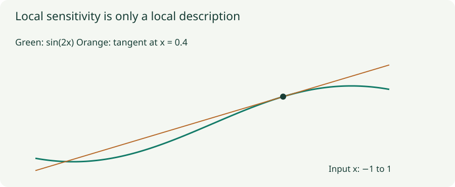

Noise, Consistency, and Gradient Penalties: Control Sensitivity
Derive the connection between input perturbations and Jacobians, and distinguish several commonly confused penalties.
A model can fit observed labels while changing sharply around the observed inputs. Noise injection, consistency losses, and derivative penalties address different forms of that sensitivity. To understand their relationship, specify what is perturbed, what outputs are compared, and where the derivatives are measured.
1. Input noise gives an exact penalty for a linear predictor
Let $f(x)=w^Tx$ and add zero-mean input noise $\xi$ with covariance $\Sigma$. For a fixed example, squared error becomes
To see why, write the noisy residual as $r+w^T\xi$, where $r=w^Tx-y$. Squaring gives $r^2+2r w^T\xi+(w^T\xi)^2$. The middle term averages to zero. The last term averages to $w^T\mathbb E[\xi\xi^T]w=w^T\Sigma w$.
For isotropic noise, $\Sigma=\sigma^2I$, this is a squared L2 penalty $\sigma^2\|w\|^2$. Noise strength and units matter: perturbing an unstandardized feature by one unit can mean something very different from perturbing another feature by one unit. Anisotropic noise penalizes sensitivity in the directions it actually perturbs.
2. Nonlinear models require a more careful approximation
For a differentiable scalar predictor, locally linearize $f(x+\xi)\approx f(x)+\nabla f(x)^T\xi$. Substituting this approximation into squared error gives a Jacobian penalty. But this drops a second-order term from the model itself.
Retaining $\tfrac12\xi^TH_f\xi$ in the Taylor expansion, and keeping terms through order $\sigma^2$ for small isotropic Gaussian noise, gives
The extra term comes from twice the product of the original residual $r$ and the quadratic Taylor term. Thus “input noise always equals a Jacobian penalty” omits a curvature contribution. The simpler expression is exact for linear models and can be useful when local curvature or the residual is small. A truncated approximation can even become negative outside its useful regime, while a true expected squared loss cannot.

3. Lab: test the approximation rather than assuming it
Gaussian perturbations of a curved predictor
Use $f(x)=\sin(\omega x)$ and target $y=0.4$. Compare exact Gaussian expected squared loss with the locally linear and second-order approximations. The selected noise level also runs 20,000 seeded Monte Carlo draws as an independent numerical check.
The exact curve uses $\mathbb E[\sin(\omega(x+\xi))]=\sin(\omega x)e^{-\omega^2\sigma^2/2}$ and $\mathbb E[\sin^2(\omega(x+\xi))]=[1-\cos(2\omega x)e^{-2\omega^2\sigma^2}]/2$. Expand the square as $\mathbb E[f^2]-2y\mathbb E[f]+y^2$. These formulas avoid treating a noisy Monte Carlo estimate as the exact answer.
Raise the frequency or the noise scale. The local approximation becomes less reliable because the perturbations cross more curvature. The displayed model is fixed; no training or robustness benchmark is being simulated.
4. Consistency compares predictions, rather than noisy predictions to labels
A squared consistency loss can use $\|f(x+\xi)-f(x)\|^2$. For a vector output and small isotropic noise, its leading expectation is $\sigma^2\|J_f(x)\|_F^2$, where $J_f$ is the input–output Jacobian. There is no supervised residual $f(x)-y$ in this comparison, so the previous residual–curvature term does not appear at leading order.
For classification, one may compare probability distributions using KL divergence. The resulting local metric is not generally the same as squared Euclidean distance between logits. Also specify which branch is differentiated: holding a target prediction fixed with stop-gradient defines a different update from differentiating through both sides.
A teacher–student scheme can compare a student on one perturbed view with a teacher on another. In Mean Teacher, teacher weights follow an exponential moving average of student weights. Its target is detached from the student gradient. Consistency on unlabeled examples can be useful, but a constant prediction is also perfectly consistent. Supervised targets or other mechanisms are needed to anchor useful information and avoid trivial solutions.
5. Several “gradient penalties” pursue different targets
| Penalty | Derivative and sampling location | Desired behavior |
|---|---|---|
| Jacobian / contractive penalty | $\|J_f(x)\|_F^2$ on selected inputs | Small local change of the chosen representation or output. |
| Input-loss gradient penalty | $\|\nabla_x\ell(f(x),y)\|^2$ | Small local change of this supervised loss. |
| R1 discriminator penalty | $\frac\gamma2\mathbb E_{x\sim p_{\rm data}}\|\nabla_xD(x)\|^2$ | Gradient toward zero at real data points. |
| WGAN-GP | $\lambda\mathbb E_{\hat x}(\|\nabla_{\hat x}D(\hat x)\|_2-1)^2$ on sampled interpolants | Gradient norm toward one at those sampled points. |
A penalty toward zero and a penalty toward one are not interchangeable. Nor does constraining derivatives at finitely sampled points prove a global Lipschitz bound everywhere. For vector outputs, a Jacobian Frobenius norm sums squared sensitivities across outputs and input directions; an operator norm instead measures the single largest directional amplification.
6. Differentiate the intended quantity
# Scalar output D(x); retain derivative graph to train with this penalty.
x = x.detach().requires_grad_(True)
score = discriminator(x)
grad_x = torch.autograd.grad(score.sum(), x, create_graph=True)[0]
r1 = 0.5 * gamma * grad_x.flatten(1).square().sum(1).mean()
loss = discriminator_loss + r1This pattern assumes each scalar score depends only on its corresponding example. Batch-coupled operations require more care: differentiating a sum can mix dependencies between examples. A summed vector output also does not automatically give the full Jacobian norm. Retaining the derivative graph is necessary here because the penalty must itself be differentiated with respect to model parameters.
Noise in weights, gradients, or inputs produces different objectives and dynamics. Denoising autoencoders deliberately corrupt an input and reconstruct its clean version; a contractive autoencoder directly penalizes the encoder Jacobian. Their connection is useful, but the location and form of corruption remain part of the method.
Questions with answers
No. That exact equivalence holds for the stated linear predictor with isotropic noise and squared loss. Nonlinear models introduce input-dependent derivatives and curvature.
No. A constant predictor is consistent. The full objective must supply information that rules out such trivial solutions.
R1 pushes input gradients toward zero at real examples. WGAN-GP pushes their norm toward one at sampled interpolants.
Sources
Bishop, Training with Noise; Tarvainen and Valpola, Mean Teacher; Mescheder et al., Which Training Methods for GANs Do Actually Converge?; Gulrajani et al., Improved Training of Wasserstein GANs.